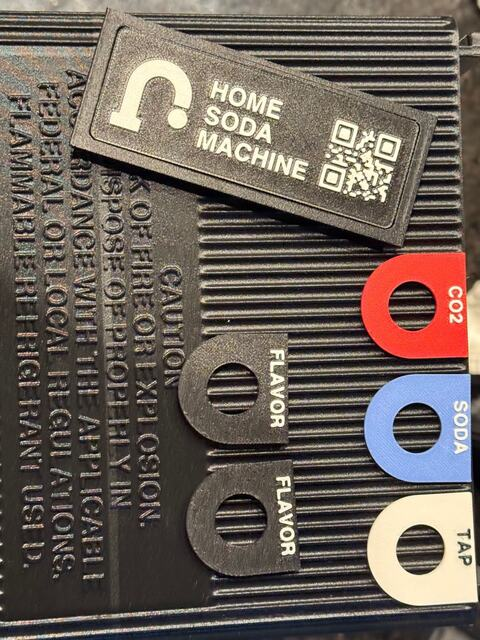

Two nozzles on one part
Measure where the second nozzle lands.
Two nozzles sharing a part must lay their lines side by side. The printer measures the gap between its own nozzles before every job. On Mark2 that still left white lettering out of its black pockets.
Seen in PET-GF · Mark2 · textured PEI · both 0.4 mm · 29 September 2026Not tried in: Mark 1, or any other nozzle pair
{{h2c-reg:/white_correction_mm/X}} mm
to move the right nozzle’s paths along the bed, left to right.
+{{h2c-reg:/white_correction_mm/Y}} mm
to move them front to back.
Thirteen minutes and under six grams of plastic to find out.
How it is read
Each pair is drawn end to end, with the right nozzle’s line {{h2c-coupon:/candidate_spacing_mm}} mm further over at every pair along the row. The pair that prints as one straight line names the shift. The lines are 0.9 mm wide, so neighbours differ by an eighteenth of a line.
The first coupon ran out of range: its best pairs were the last in each row. A second carried the range further. It numbers its pairs from 0 and Derek counted from 1; his “fourth from the right” settled which he meant.

Where the correction goes
Into the slice, never the drawing. The slicer is told the right nozzle sits that far from where the printer believes, and it moves every right-nozzle path to suit. The model stays as drawn. Each corrected file is compared, path by path, with an uncorrected slice of itself.
What it belongs to
One printer and one pair of hotends. Change a hotend, or how the printer calibrates, and the coupon is printed again.
“The X-Y alignment between the two nozzles seems really good.”
Still openThe front-to-back reading is tentative: slight oozing made neighbouring pairs hard to tell apart. No print has measured the error left after the correction.
In the record
The coupon and how to read it · The reading · The first coupon · The nameplate that showed it